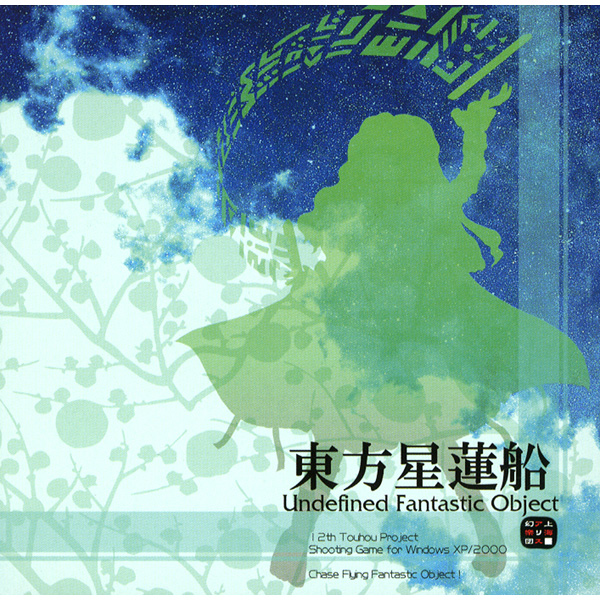
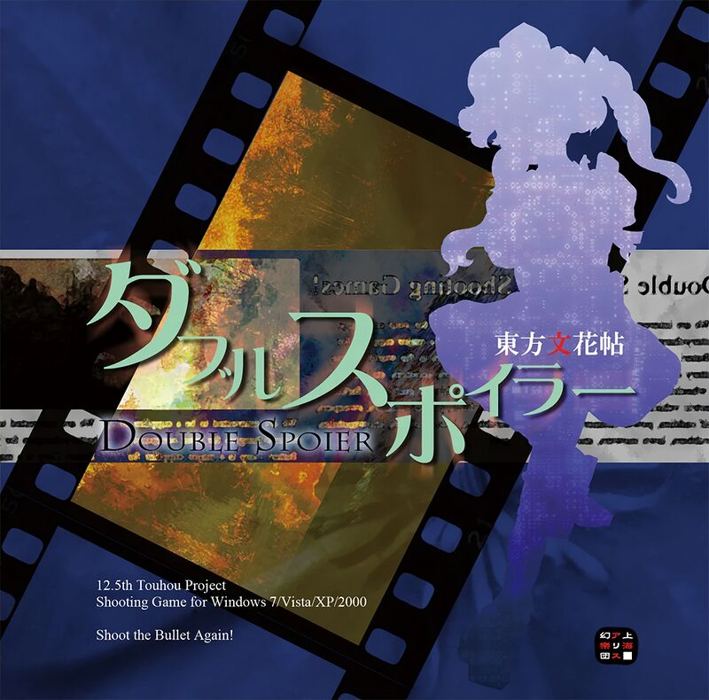
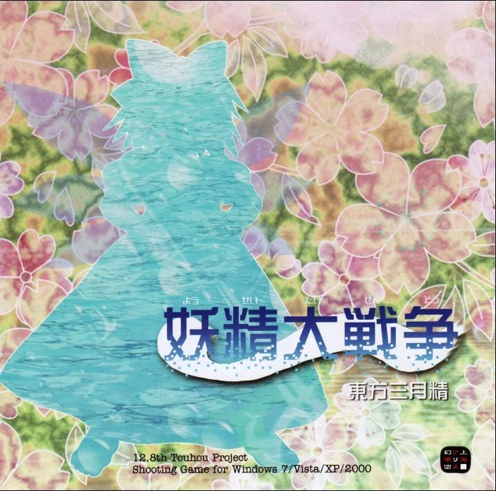
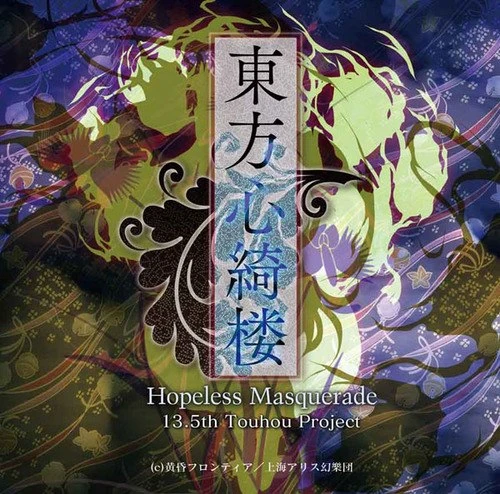
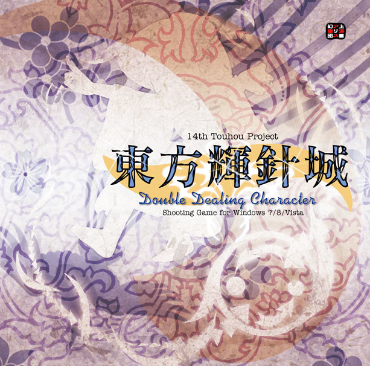
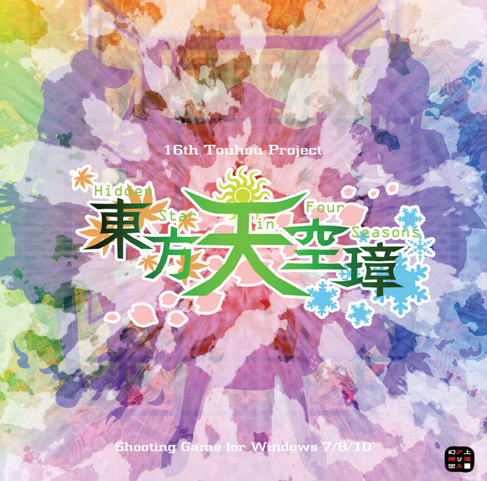

Touhou Kaikidan
Extraña historia romántica
~ Mystic Square (東方怪綺談 ～ Mystic Square) es el quinto juego del Proyecto Touhou y es el último juego para el PC-98 japonés,
lanzado en 1998. Es el primer juego en el que aparece Alice Margatroid y presenta cuatro seleccionables. personajes: Reimu Hakurei,
Marisa Kirisame, Mima y Yuuka Kazami.
Touhou 6 ~ Embodiment of Scarlet Devilt
The Embodiment of Scarlet Devil sigue los pasos de los anteriores títulos de PC-98
y Seihou Project en cuanto a las mecánica base, pero haciendo ciertos cambios claves,
siendo el mayor de éstos la implementación del sistema de Spell Cards. El ritmo de los
patrones de balas también se vio reducido considerablemente, pero se mantuvieron algunos
aspectos como los "patrones rápidos" de PC-98, dándole a The Embodiment of Scarlet Devil
la reputación de poseer una mayor dificultad que otros juegos posteriores, en los cuales
este tipo de patrones serían casi totalmente removidos.
Touhou 7 ~ Perfect Cherry Blossom
東方妖々夢～ Perfect Cherry Blossom (romanizado: Touhou Youyoumu ～ Perfect Cherry Blossom, Lit: "Sueño Embrujante
del Este ～ Cerezo Florecido Perfectamente") Es la séptima entrega de la serie de juegos Touhou, y la segunda creada para Windows,
presenta grandes innovaciones, especialmente gráficas frente a su predecesor. El número de personajes jugables se incrementa a tres
con la inclusión de Sakuya Izayoi, cambiando sustancialmente su historia y final. El aspecto musical es mejorado con respecto a su
antecesor. Los controles siguen siendo los mismos que en Embodimient of Scarlet Devil.
Touhou 8 ~ Imperishable Night
東方永夜抄 ～ Imperishable Night (romanizado: Touhou Eiyashou ～ Imperishable Night, Lit:"Vignette de la Noche Eterna del Este ～ Noche Imperecible") es el octavo juego oficial de Touhou. Se lanzó el 15 de agosto de 2004. Destacan la mejora gráfica y musical respecto a los juegos anteriores, además de cambios en el sistema de juego y la gran cantidad de personajes a elegir en comparacion a juegos anteriores de la saga, llegando a los 8 personajes, que pueden colaborar con la nueva opción de juego en equipo.
Touhou 9 ~ Phantasmagoria of Flower View
東方花映塚 ～ Phantasmagoria of Flower View (romanizado: Touhou Kaeidtzuka ～ Phantasmagoria of Flower View, Lit: "Monte Oriental con vista a las flores ～ Fantasmagoría de la vista de las flores") es un juego de disparos vertical danmaku , y el noveno juego oficial en la serie Touhou . Es muy diferente a los juegos Touhou lanzados anteriormente ya que es un juego del tipo VS, donde dos personajes pelean en las mismas condiciones. En ese aspecto, el juego recuerda al juego Touhou Phantasmagoria of Dim. Dream para la PC-98, y a los diseños de Twinkle Star para las consolas Neo Geo/Dreamcast/PS2.
Touhou 10 ~ Mountain of Faitht
Touhou Fuujinroku
Crónicas del Dios del Viento
~ Mountain of Faith
Montaña de la Fe
(東方風神録 ～ Mountain of Faith) es el décimo juego oficial de la serie de juegos Touhou.
Como todos los templos Shintō, el descuidado Templo Hakurei de Gensokyo fue originalmente creado para albergar al dios local; debido a que toda clase de youkai pasan el tiempo en el templo, los humanos de la región lo han dejado de visitar y la fe que le tenían al dios del templo empezó a decaer, disminuyendo su fuerza e influencia. Reimu Hakurei y Marisa Kirisame comienzan una aventura para alcanzar y llegar a la misteriosa Montaña Youkai con la esperanza de encontrar una solución a este problema.
Touhou 10.5 ~ Scarlet Weather Rhapsody
東方緋想天 ～ Scarlet Weather Rhapsody (romanizado: Touhou Hisouten ～ Scarlet Weather Rhapsody, Lit: "Percepciones Escarlata de los Cielos del Este ～ Rapsodia del Clima Escarlata") cronológicamente tiene lugar un año después de Mountain of Faith (TH10). Por lo tanto se le denomina TH10.5.
Touhou 11 ~ Subterranean Anim
東方地霊殿 ～ Subterranean Animism (romanizado: Touhou Chireiden ～ Subterranean Animism, Lit: "Palacio del Este de los Espritus de la Tierra ～ Animismo Subterráneo) El décimo primer Juego de la saga Touhou (Sin contar los juegos de Pelea y Shoot the Bullet) presentando varias innovaciones y cambios retomando en algunos aspectos partes de sus antecesores entre lo que destaca del juego:
Touhou 12 ~ Undefined Fantastic Object

東方星蓮船 ～ Undefined Fantastic Object (romanizado: Touhou Seirensen ～ Undefined Fantastic Object, Lit: "Barco "Loto-Estrella" del Este ～ Objeto Fantastico Indefinido") es el juego número 12 de la saga de Touhou, conocido comúnmente con la sigla UFO. Regresan 3 personajes para ser seleccionadas en esta entrega siendo Reimu Hakurei, Marisa Kirisame y Sanae Kochiya, cada una con dos tipos de armas.
Touhou 12.3 ~ Touhou Hisoutensoku
Touhou Hisoutensoku ~ Choudokyuu Ginyoru no Nazo o Oe (東方非想天則 ～ 超弩級ギニョルの謎を追え, lit. en inglés "Lacking the Perception of the Natural Laws of the East ~ Chase the Enigma of the Gargantuan Guignol") la entrega 12.3 de Touhou Project, creado por Team Shanghai Alice con la colaboración de Twilight Frontier. Es un pack de expansión independiente para Scarlet Weather Rhapsody con cinco nuevos personajes y tres modos de historias. Sus eventos ocurren después de los de Undefined Fantastic Object; fue desarrollado y lanzado junto a ese juego.
Touhou 12.5 ~ Double Spoiler

Double Spoiler
Deflector Doble
~ Touhou Bunkachou
Álbum de Palabras Florales
(ダブルスポイラー ～ 東方文花帖) es un bullet hell de fotografía con desplazamiento vertical, es parte de la serie de videojuegos oficiales de Touhou Project correspondiendo la entrega número "12.5". Este título es una secuela de Shoot the Bullet, por lo que tienen conceptos y mecánicas similares.
Touhou 12.8 ~ Great Fairy Wars

妖精大戦争 ～ 東方三月精 (romanizado: Yousei Daisensou ~ Touhou Sangessei, significando "Gran Guerra de las Hadas ~ Las Tres Hadas del Oriente") es un juego de "danmaku congelante" vertical y es el juego 12.8 de la saga. Es una continuación de la historia de Strange and Bright Nature Deity
Touhou 13 ~ Ten Desires
東方神霊廟 ～Ten Desires (romanizado: Touhou Shinreibyou ～ Ten Desires, Lit: "Espíritus divinos, Mausoleo del Este ～ Diez Deseos") es el decimotercer juego oficial de la serie Touhou. El demo se lanzó el 15 de abril, en Internet y luego en el Reitaisai 8, en mayo del 2011. La versión completa fue lanzada en la Comiket 80, el 13 de agosto del 2011.
Touhou 13.5 ~ Hopeless Masquerade

Touhou Shinkirou ~ Hopeless Masquerade (東方心綺楼 ～ Hopeless Masquerade, lit. "Torre Oriental del Corazón de Tela ~ Enmascarado sin esperanza")
Es el 13.5 to juego oficial de la serie Touhou. Es un juego de lucha en 2D que fue anunciado el 5 de octubre de 2012, pero contando por cantidad de juegos este vendría siendo el numero 20 de la lista de los juegos oficiales de la saga de Touhou
Touhou 14 ~ Double Dealing Character

Touhou Kishinjō ~ Double Dealing Character (東方輝針城 ～ Double Dealing Character, lit "Castillo del Este de la Agujas Centellantes ～ Personaje de Doble Interpretación") Este es el número 14 en la lista de juegos de Touhou Project, siendo así el numero 21 de la saga de juegos oficiales sin considerar su numeración. Fue anunciado por ZUN en su blog personal el 11 de mayo de 2013. El 26 de mayo de 2013, en Reitaisai 10, se lanzó una demo jugable que contiene las tres primeras etapas. El juego completo se lanzó el 12 de agosto de 2013 en Comiket 84.
Touhou 14.5 ~ Urban Legend in Limbo
Touhou Shinpiroku
Registro de los Profundos Secretos
~ Urban Legend in Limbo
Leyendas Urbanas en el Limbo
(東方深秘録 ～ Urban Legend in Limbo ) es la entrega oficial número 14.5 de Touhou Project, lanzado el 10 de mayo de 2015. Se lanzó una demo del título el 29 de diciembre de 2014 en el que se incluye a Reimu Hakurei, Marisa Kirisame y Kasen Ibaraki como personajes jugables. Este es el quinto videojuego de lucha en el que colaboran Team Shanghai Alice y Twilight Frontier.
Touhou 15 ~ Touhou: Legacy of the Lunatic Kingdom

Touhou Kanjuden ~ Legacy of Lunatic Kingdom (東方紺珠伝 ～ Legacy of Lunatic Kingdom,literalmente "Cuento oriental del orbe ultramarino.") es la 15ª entrega de Touhou, siendo así el 24 sin tener en cuenta la numeración. Presenta grandes cambios respecto a las entregas anteriores, en especial la introducción del modo Pointdevice, el cual nos permite reintentar cada uno de los "capítulos" en los que se dividen los stages y bosses hasta que consigamos pasarlo. Además, el modo Pointdevice nos permite retomar el juego desde el mismo punto en el que estábamos si queremos tomar un descanso y cerrar el juego.
Touhou 15.5 ~ Antinomy of Common Flowers
Touhou Hyouibana ~ Antinomy of Common Flowers (東方憑依華 ~ Antinomy of Common Flowers) es la 15.5ª entrega de Touhou desarrollada por Team Shanghai Alice y Twilight Frontier. Fue anunciada durante el evento Doujin! Year-End Party Stream el 11 de Diciembre de 2016.
Posee un total de 20 personajes, 15 de ellos provenientes de Urban Legend in Limbo y 5 totalmente nuevos incluyendo a las jefas finales Joon Yorigami y Shion Yorigami como personajes desbloqueables.
Touhou 16 ~ Hidden Star in Four Seasons
Touhou TenkuushouCetro de Jade de los Cielos~ Hidden Star in Four SeasonsEstrella Oculta en las Cuatro Estaciones (東方天空璋 ～ Hidden Star in Four Seasons ) es la entrega oficial número 16 de la serie, anunciado por primera vez en el blog personal de ZUN el día 20 de abril de 2017 a las 22:09 JST[1]. Una demo jugable tuvo su lanzamiento el 7 de mayo de 2017 en el Reitaisai 14, mientras que la versión completa tuvo su lanzamiento el 11 de agosto de 2017 en el Comiket 92; posteriormente, el día 17 de noviembre de 2017, el juego fue lanzado en Steam, marcando el debut de la serie en esta plataforma.
Touhou 17 ~ Wily Beast and Weakest Creature
Touhou Kikeijuu
Oni en forma de bestia
~ Wily Beast and Weakest Creature
Bestia astuta y criatura más débil
(東方鬼形獣 ～ Wily Beast and Weakest Creature) es la décimo séptima entrega oficial de Touhou Project. Fue anunciado por ZUN en su blog personal el 17 de abril de 2019, a las 14:02 JST.
Una versión de prueba del juego estuvo disponible para ser jugada en la Reitasai 16 el 5 de mayo de 2019. La versión completa fue lanzada el 12 de agosto de 2019 en la Comiket 96.
Touhou 17.5 ~ Gouyoku ibun
2021)
Touhou Gouyoku Ibun
Extraño Relato de Avaricia
~ Suibotsushita Chinshuu Jigoku
Infierno Sumergido de Dolor Hundido
(東方剛欲異聞 ～ 水没した沈愁地獄) es la entrega oficial número 17.5 de la serie, creada por Team Shanghai Alice, en colaboración con Twilight Frontier.
Touhou 18 ~ Unconnected Marketeers
Touhou Kouryuudou ~ Unconnected Marketeers (東方虹龍洞 ～ Unconnected Marketeers lit. Cueva del Dragón Arcoíris ～Comercializadores Desconectados) es la décimo octava entrega oficial de Touhou Project. Fue anunciado por ZUN en el blog de noticias de Touhou Touhou Yomoyama News, el 27 de Febrero de 2021. Una demo jugable fue lanzada el 21 de Marzo del mismo año, en el Reitaisai 18, y la versión completa fue lanzada el 4 de Mayo de 2021.
Touhou 18.5 ~ Black Market of Bulletphilia ~ 100th Black Marke
Bulletphilia-tachi no Yami-Ichiba
~ 100th Black Market
(バレットフィリア達の闇市場 〜 100th Black Market) es un juego danmaku con desplazamiento vertical y el la entrega 18.5 oficial de Touhou Project, que tiene de protagonista a Marisa Kirisame. El juego sigue el mismo estilo de Impossible Spell Card y Violet Detector. El juego fue lanzado el 14 de agosto de 2022 en la Comiket 100 y en Steam
Touhou 19 ~ Unfinished Dream of All Living Ghost
Touhou Juuouen
Beast King Garden
~ Unfinished Dream of All Living Ghost (東方獣王園 〜 Unfinished Dream of All Living Ghost) is the nineteenth official installment of the Touhou Project. The game was released on August 13, 2023 at Comiket 102.